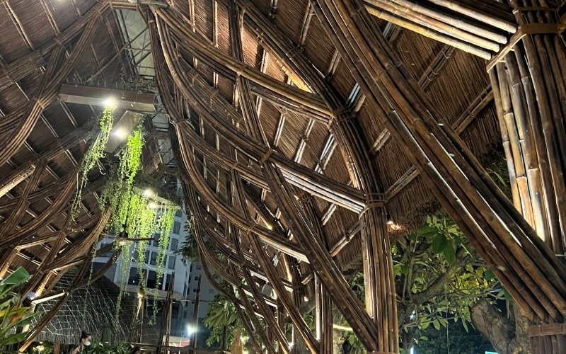
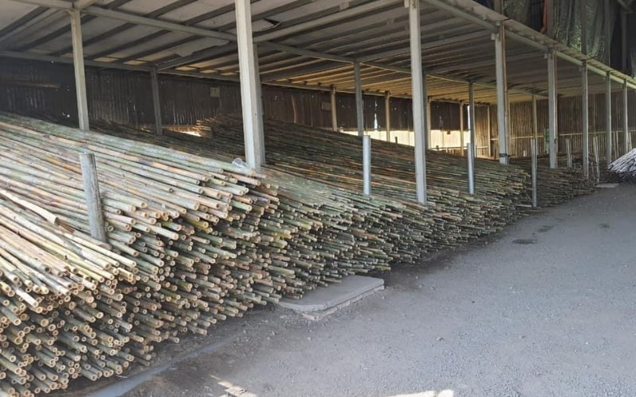
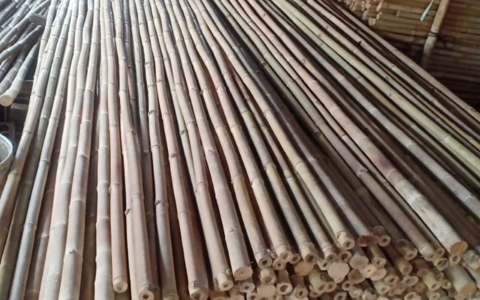

Trang trí trần nhà bằng tre và là liên kết các thanh tre trúc lại với nhau, để tạo nên nhiều kiểu hoa văn trang trí. Có 2 loại trần tre trúc, là ốp nguyên cây hoặc trần một nửa cây, tùy thuộc vào điều kiện thực tế.
Trang trí trần nhà bằng tre có bền không?
Trang trí trần nhà bằng tre vẫn còn mới mẻ với nhiều người, một số người cho rằng nó không bền và dễ gãy. Tuy nhiên, tre là vật liệu có độ bền và tính chất cơ lý gấp 2 đến 3 lần gỗ.
Tre còn có khả năng chịu kéo và chịu lực tốt hơn thép và bê tông. Khi được xử lý và để trong nhà, tre có thể tồn tại tới 100 năm. Do đó, khi trang trí trần nhà bằng tre, bạn không phải lo lắng về độ bền của nó.
Trang trí trần nhà bằng tre vẫn còn là một lựa chọn khá mới mẻ với nhiều người. Một số người lo ngại rằng tre có thể bị mục, giòn hoặc gãy theo thời gian. Tuy nhiên, bạn hoàn toàn không cần phải lo lắng.
Với đặc tính chịu lực tốt, dẻo dai và nếu được xử lý đúng cách (như sấy khô, hun khói hoặc xử lý chống mối mọt), tre có thể đạt độ bền rất cao và sử dụng lâu dài trong các công trình nội thất.
Đặc điểm của việc ốp trần tre trúc

Các đặc điểm của ốp trần tre trúc
- Nguyên liệu chính là tre tự nhiên, xử lý mối mọt, uốn thẳng
- Những thanh gỗ tạo thành khung kết nối tre với trần và tường
- Đinh thép kết nối tre với khung gỗ
- Tạo phong cách thiết kế kết hợp nhiều kiến trúc
- Kết nối với các đồ trang trí bằng tre khác như đèn, bàn ghế.
Ốp trần tre được sử dụng để nâng cao giá trị thẩm mỹ cho căn phòng. Nếu bạn đã quá nhàm chán với trần bê tông thô hoặc la phông thạch cao vậy thì bạn không thể bỏ qua những mẫu trần tre này.
Tre có đặc tính dẻo dai, bền, đẹp và cứng Ốp tre trúc trang trí rất đa dạng về mẫu mã, hoa văn phong phú và độc đáo. Dễ dàng để phù hợp với nhiều phong cách khác nhau.
Với trần nhà bằng tre trúc bằng tre chắc chắn làm cho không gian của bạn trở nên nổi bật, độc đáo và độc lập, được sử dụng rộng rãi trong các khách sạn, nhà ở, khu nghỉ dưỡng, v.v. để thu hút và nâng cao giá trị thẩm mỹ của không gian. Ở những nơi như thế này, nơi thiết kế trần nhà độc đáo, nó giúp thêm hương vị cho không gian, gây ấn tượng và thu hút khách hàng.
Vì sao nên trang trí trần nhà bằng tre

Tre là nguyên liệu thân thiện với môi trường, là vật liệu trang trí lý tưởng cho nhiều công trình. Điều này chủ yếu là do độ bền lâu dài của tre. Đồng thời tre cũng rất dễ uốn cong, cho phép bạn tạo ra nhiều kiểu trang trí khác nhau.
Trần nhà bằng tre đến một nét thẩm mỹ rất khác so với phong cách trang trí truyền thống ngày nay. Tre là vật liệu trang trí có chi phí thấp và rất thân thiện với môi trường.
Một Trần nhà bằng tre tạo ra một màu sắc mộc mạc, đơn giản và thanh lịch. Tất cả tạo nên một không gian sống thật tĩnh lặng và gần gũi, đậm chất Việt Nam.
Tuy nhiên để tạo nên một công trình trang trí trần nhà bằng tre độc đáo, bạn cần lựa chọn đơn vị thi công tre trúc có kinh nghiệm và uy tín.
Các bước thi công trần cót tre đơn giản
Trần cót tre tối ưu đòi hỏi phải lập kế hoạch đến từng chi tiết nhỏ nhất. Dưới đây là những điều bạn cần chú ý khi thay đổi phòng trong nhà.
1.Chuẩn bị nguyên liệu
Bạn cần tính toán lượng tre cần dùng để không quá nhiều hoặc quá ít. Để đảm bảo chất lượng và thời gian sử dụng lâu dài, bạn nên chọn loại tre gỗ cao cấp đã qua xử lý mối mọt. Chọn những cây tre đều nhau, thẳng và có màu sáng để tăng tính thẩm mỹ cho công trình của bạn.
2.Chuẩn bị máy móc và nhân công
Sau khi mua nguyên vật liệu, bạn cần chuẩn bị các dụng cụ cần thiết như giàn giáo, máy cắt, máy khoan, súng bắn đinh, đinh.. Cần ít nhất 3-4 nhân lực thực hiện thi công.
Hiện nay các mẫu trang trí trần nhà bằng tre rất đa dạng. Tuy nhiên, nếu bạn muốn tự mình thực hiện, chúng tôi khuyên bạn nên chọn mẫu đơn giản nhất, dễ thực hiện.
Quy trình thi công trần nhà bằng tre trúc
- Bước 1: Tính diện tích trần để tính khối lượng tre và cắt tre theo độ dài phù hợp. Chọn tre có kích thước tương tự để trần nhà bằng tre trúc. Các cây còn lại được cắt ngắn để tạo thành các thanh ngang vững chắc.
- Bước 2: Tạo khung đỡ bên trên bằng nẹp gỗ, sắt hoặc tre.
- Bước 3: Đặt các tấm tre còn lại chồng lên nhau, dán đều và cố định bằng đinh. Chọn móng có độ dài phù hợp để vừa đảm bảo độ chắc vừa đẹp.
- Bước 4: Chải hoặc phủ 2k hoặc PU để tre bền đẹp và bền màu. Tạo ra một thành phẩm trần nhà bằng tre trúc đẹp.
Nên chọn trần tre màu gì cho không gian?
Nhiều đơn đơn vị đầu tư băn khoăn không biết nên chọn màu sắc nào cho trần tre nhà mình. Màu sắc của trần tre phù hợp với phong cách nội thất và diện tích căn phòng. Nếu muốn tạo cảm giác trần nhà cao thì nên chọn loài tre trúc có màu sáng tự nhiên và ngược lại.
Nếu muốn làm nổi bật vẻ đẹp của trần nhà, bạn nên chú trọng lựa chọn những gam màu trung tính và những miếng tre thẳng, to khoảng 4-5 cm. Nếu bề mặt trần làm bằng vật liệu hoặc chất liệu khác, bạn có thể chọn màu trần tre tương đồng với màu gỗ của nội thất.
Tre Việt Building – Đơn vị thi công trần tre trúc TPHCM

Trang trí trần nhà bằng tre hiện nay có rất nhiều đơn vị thi công thiết kế trần tre, nhưng tìm được đơn thi công các mẫu thiết kế tranh tre, trần, vách tre uy tín, lành nghề lại là một vấn đề khác và phải đảm bảo tính thẩm mỹ, chi phí, uy tín và chuyên Tre việt building là công ty chuyên thi công trần tre trúc tp hcm và các tỉnh lân cận, mang đến cho khách hàng những không gian đẹp nhất.
Chúng tôi có nhiều năm kinh nghiệm trong cung cấp nguyên liệu tre, cũng như thi công trần tre trúc tphcm và các khu vực lận cận. Chúng tôi đảm bảo chất lượng nguyên liệu, công trình. Giá thành cạnh tranh. Cam kết tuổi thọ lâu dài. Bảo trì bảo hành thường xuyên.
Liên hệ ngay với Tre Việt Building để được tư vấn chi tiết
Thông tin liên hệ:
CÔNG TY TRÁCH NHIỆM HỮU HẠN TRE VIỆT BUILDING
Địa chỉ: 917 Phạm Văn Đồng, Phường Linh
Xuân, Thành phố Hồ Chí Minh
Nhà máy sản xuất: Phú Hợp B, Xã Phú Lâm
Đồng Nai.
Website: tretruc.com.vn
Điện thoại – Zalo: 093.123.5757
Email: treviet23@gmail.com